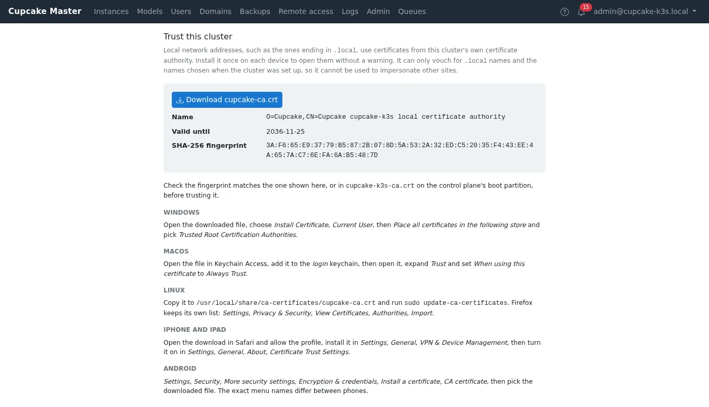

A cluster without internet signs its local addresses, such as https://lab1.local, with its own certificate
authority. Browsers warn about those addresses until the device trusts that authority once. The Trust page shows how,
for each kind of device, and offers cupcake-ca.crt to download. Its SHA-256 fingerprint is shown so you can check
the file.

On a Pi cluster the same file is on the control plane's boot partition as cupcake-k3s-ca.crt.